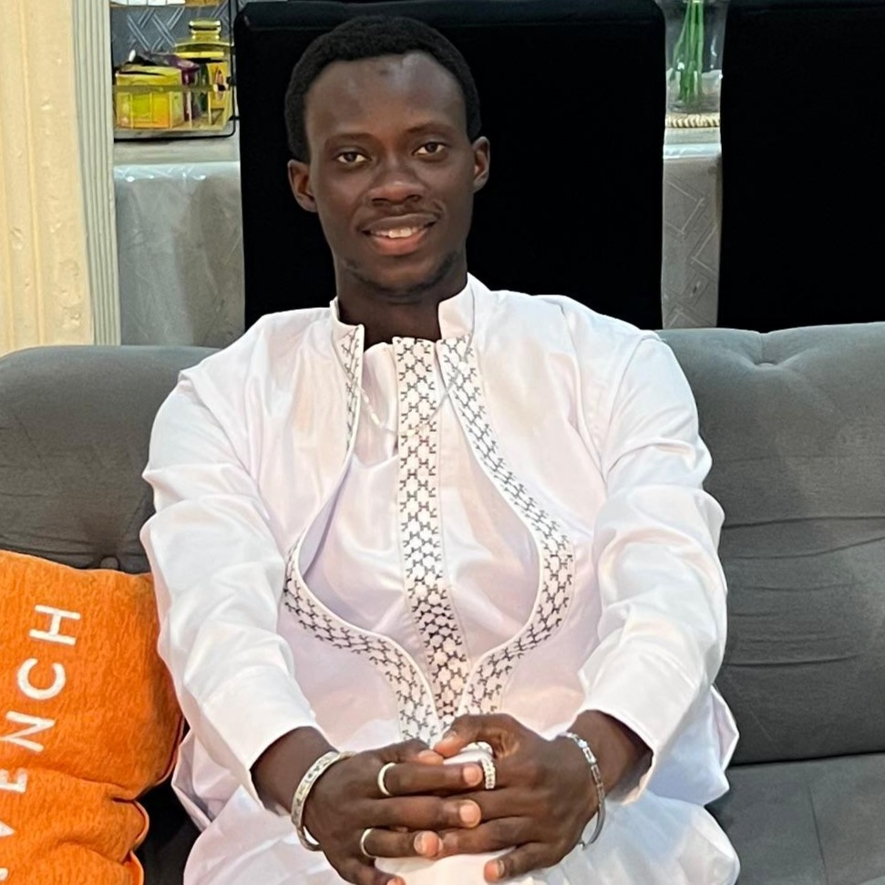
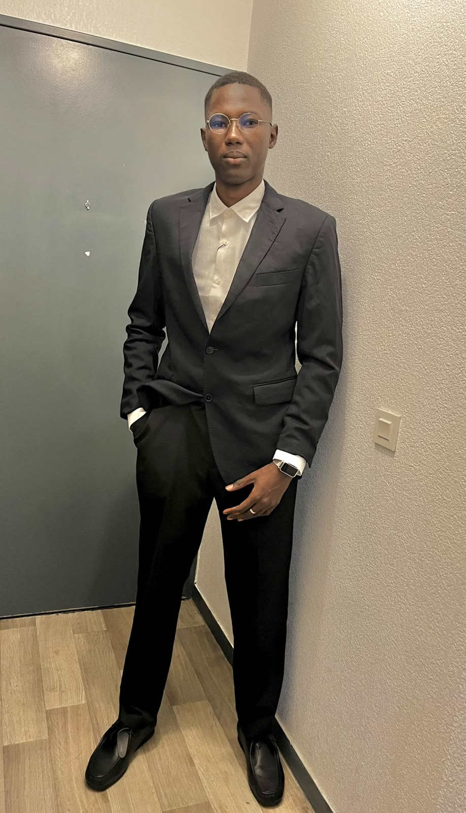
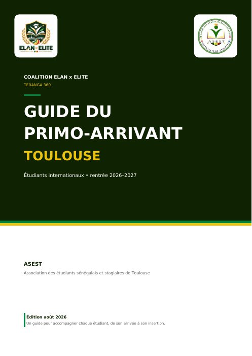

TERANGA 360
Pa Lamine Ndiaye, étudiant en Master 2 en Urbanisme et aménagement du territoire, et candidat à la présidence de l’ASEST.
Notre coalition est composée d’un groupe dynamique à tous les niveaux. Ensemble, nous avons constitué un programme structuré autour de cinq piliers, pour accompagner chaque étudiant de son arrivée à Toulouse jusqu’à son insertion professionnelle.
"Je crois en une association qui ne se contente pas de réunir les étudiants,
mais qui les accompagne, valorise leurs ambitions et transforme
leurs expériences en une force collective."
Notre Bureau
Bureau Exécutif
Pa Lamine Ndiaye
Président
Coumba Sow
Vice-présidente
Magaye Gaye
Secrétaire Général

Modou Dell
Trésorier
Le Parcours du Président Pa Lamine Ndiaye

Son engagement politique lui a permis d’être élu conseiller municipal en 2022, faisant de lui l’un des plus jeunes élus de l’histoire politique du Sénégal.

Fervent panafricaniste, il est membre fondateur du Club CEDEAO et en devient le premier président à l’Université Amadou Mahtar Mbow en 2024. Il a notamment coordonné la 8ᵉ édition de la Journée africaine de lutte contre la corruption.

Président de l’Amicale des Étudiants Ressortissants de la Région de Kaolack à l’université Amadou Mahtar Mbow de 2022 à 2023.
Parcours Actuel : Étudiant en Master 2, il est aujourd'hui le candidat tête de liste de la Coalition ÉLAN x ELITE pour la Présidence de l'ASEST, portant la vision et le programme TERANGA 360.
Présidents des Commissions
Mouhamed Dione
Commission Pédagogique
Mamadou Fall
Comm. Sociale & Culturelle
Nom Prénom
Comm. Communication & R.E.

Mohamed Dione
Commission Sportive
COPRÉSIDENCE — COMMISSION ORGANISATION
Doudou Ndiaye
Co-président
Ndeye Penda Dioume
Co-présidente
Autres Membres du Bureau Exécutif
El Hadji Mbaye
Membre
Asmaou Kouyaté
Membre
Abdourahmane Boiro
Membre
Racky Sarr
Membre
Aurélie Toupane
Membre
Khady Mbengue
Membre
Mbaye Thiane
Membre
Issa Fall
Membre
Marième Wélé
Membre
Mbayame Sall
Membre
Seydou Kane
Membre
Thiouna Ndiaye
Membre
Maïmouna Faye
Membre
Alioune Badara Sylla
Membre
Mouhamed Fall
Membre
Sidy Bara Mbaye
Membre
Notre Programme — TERANGA 360
Un parcours complet, de l'arrivée à Toulouse jusqu'à l'insertion professionnelle.
DALAL
ACCUEILLIR • INSTALLER • ACCOMPAGNER
NOTRE AMBITION
Des premiers pas mieux accompagnés : faire en sorte qu'aucun nouvel étudiant ne soit laissé seul face aux difficultés de l'arrivée.
NOTRE CONSTAT
Entre la recherche de logement, les démarches administratives, la découverte de la ville et l'intégration, les premiers pas peuvent parfois être difficiles.
« Arriver à Toulouse, c'est commencer une nouvelle aventure. Et personne ne devrait avoir à traverser seul ses premiers pas. »
UN BESOIN · UNE ACTION · UN ACCOMPAGNEMENT
ARRIVER
Préparer Toulouse- Deux rencontres en visioconférence avant la rentrée
- Informer, conseiller et préparer les futurs arrivants aux réalités de la vie étudiante à Toulouse
« Se préparer avant la rentrée. »
ACCUEIL
Dalal ak Jàmm- Une journée d'intégration à Toulouse pour rencontrer les membres de l'association
- Un parrain ou une marraine proposé(e)
- Une semaine d'accueil et un accompagnement pendant les premières semaines
« Le parrainage commence à Toulouse, lors de la journée d'intégration. »
LOGEMENT
Kër ASEST- Une bourse interne d'annonces de logements
- Des permanences d'aide aux dossiers locatifs
- Des ateliers de prévention contre les arnaques
L'association accompagne et oriente sans garantir l'obtention d'un logement.
« Informer, orienter et prévenir : une entraide organisée. »
INTÉGRATION
Trouver sa place- Des rencontres et des activités d'intégration
- Un suivi après l'arrivée
- Créer des liens, développer l'entraide et participer pleinement à la vie associative
« Des liens à créer. Une communauté à faire vivre. »
NJÀNG
RÉUSSIR • PROGRESSER • TRANSMETTRE
NOTRE OBJECTIF
Faire de l'ASEST un véritable réseau d'entraide académique pour accompagner chaque étudiant dans sa réussite universitaire.
NOTRE CONVICTION
La réussite est plus accessible lorsqu'elle est partagée. L'expérience des anciens doit devenir un levier pour faciliter le parcours des nouveaux.
« Une génération ne doit pas recommencer de zéro ce que la précédente a déjà appris. »
4 AXES D'ACTION
RESSOURCES ACADÉMIQUES PARTAGÉES
- Site web national de ressources (cours, annales, fiches)
- Organisation par formation et par niveau (L1, L2, L3, Master)
- Mutualisation avec d'autres associations étudiantes
« Centraliser aujourd'hui pour faciliter demain. »
TUTORAT ET ENTRAIDE
- Groupes WhatsApp par filière avec des aînés référents
- Accompagnement dans les matières et les méthodes
- Renforcement continu du réseau d'entraide entre étudiants de la même filière
« Des étudiants qui s'entraident pour aller plus loin. »
MÉTHODOLOGIE ET RÉUSSITE ACADÉMIQUE
- Séances de révision collectives avant les examens
- Ateliers méthodologiques (organisation, prise de notes, gestion du temps)
- Conseils pratiques pour réussir les mémoires et les parcours universitaires
« Mieux s'organiser pour mieux réussir. »
INSERTION PROFESSIONNELLE ET MENTORAT
- Ateliers pratiques pour optimiser les profils LinkedIn
- Adaptation des CV aux normes des recruteurs en France
- Partage d'expérience sur les parcours professionnels
« Se préparer aujourd'hui aux opportunités de demain. »
JOKKOO
S'INSÉRER • RÉSEAUTER • CONSTRUIRE SON AVENIR
NOTRE AMBITION
Faire de chaque étudiant un acteur de son avenir professionnel.
JOKKOO accompagne les étudiants de l'ASEST dans leur insertion professionnelle en leur donnant les outils, les contacts et les opportunités pour réussir leur transition vers le monde du travail.
NOTRE CONVICTION
« Le diplôme valide un parcours. Le réseau et la préparation ouvrent les portes de l'avenir. »
NOS 5 DISPOSITIFS CLÉS
JOKKOO MÉTIERS
Rencontrer ceux qui ont réussi leur insertionDes rencontres régulières avec des professionnels et des anciens étudiants pour partager leurs parcours et les conseils du terrain.
CV CLINIC
Se préparer à candidaterDes ateliers pratiques pour améliorer son CV, son profil LinkedIn et se préparer aux entretiens avec des retours concrets.
MENTORAT
Connecter les générationsUne mise en relation entre étudiants et anciens diplômés pour bénéficier de conseils personnalisés sur les orientations et les opportunités professionnelles.
JOKKOO BUSINESS
Accompagner l'esprit entrepreneurialDes échanges avec des entrepreneurs, un accompagnement sur les projets et une meilleure compréhension des étapes de création d'activité.
CAP SÉNÉGAL
Garder ouvertes les perspectives au paysUne découverte des opportunités d'emploi et d'entrepreneuriat au Sénégal, pour ceux qui souhaitent préparer un retour ou construire un projet entre les deux pays.
MBOOLO
VIVRE LA COMMUNAUTÉ • AGIR • RASSEMBLER
NOTRE AMBITION
Faire de la vie associative un moteur de solidarité, de cohésion et d'engagement.
WALLU
Écouter et accompagnerUn dispositif d'entraide pour soutenir les étudiants en difficulté et les orienter vers les bonnes ressources.
- Référents sociaux à l'écoute et accompagnement discret
- Panier Teranga (aide matérielle ponctuelle selon les besoins)
- Orientation vers les services adaptés (logement, santé, administratif, etc.)
NAVÉTANES TOULOUSE
Créer du lien par le sportDes rencontres sportives pour fédérer les étudiants, favoriser la cohésion et partager des moments conviviaux.
- Organisation de tournois multi-disciplines
- Équipes ouvertes à toutes les promotions
- Moments de rencontre et d'échanges en dehors des matchs
SUNU ASKAN
Valoriser notre expressionUn espace pour mettre en lumière les talents, les initiatives et les parcours inspirants de nos étudiants.
- Scène ouverte, expositions et événements culturels
- Mise en avant des projets étudiants et des talents (artistiques, académiques, etc.)
- Rencontres inspirantes avec des alumni et des invités
72H DU SÉNÉGAL À TOULOUSE
Célébrer et rayonnerUn temps fort culturel, citoyen et associatif pour rassembler toute la communauté et valoriser notre identité.
- Trois journées d'activités culturelles, citoyennes et associatives
- Valorisation de la culture sénégalaise et des initiatives étudiantes
- Implication de toutes les commissions et des étudiants volontaires
SAMA ASEST
GOUVERNER • RENDRE COMPTE • TRANSMETTRE
NOTRE AMBITION
Faire de l'ASEST une association plus lisible, plus suivie et plus transparente, où chaque engagement peut être vu, compris et évalué.
NOTRE CONVICTION
« La confiance se construit quand les actions sont suivies, les choix expliqués et les résultats partagés. »
NOS 5 DISPOSITIFS CLÉS
TABLEAU DE SUIVI
Suivre chaque engagement avec son pilote, son échéance, son statut et sa preuve.
BUDGET LISIBLE
Présenter clairement les priorités, les dépenses et l'utilisation des ressources de l'association.
BILANS RÉGULIERS
Partager des retours d'étape et des bilans d'actions tout au long du mandat.
REPORTS EXPLIQUÉS
Une action reportée n'est pas cachée : elle est expliquée, reprogrammée et assumée.
HÉRITAGE TRANSMIS
Laisser des outils utiles à la génération suivante : guide d'accueil, réseau de parrains, mémoire des filières, réseau d'alumni, protocole Wallu et tableau de suivi.
Nos Missions
Accompagner
Soutenir chaque membre dans son intégration, ses démarches, ses projets et son évolution.
Structurer
Mettre en place une organisation claire, efficace et durable pour la coalition ÉLAN.
Valoriser
Promouvoir les talents, les initiatives et les réussites de nos membres.
Unir
Renforcer la cohésion, la solidarité et l’esprit de famille au sein de la communauté.
Ressources Utiles

Guide du primo-arrivant — Toulouse 2026–2027
Visa VLS-TS, inscription, CVEC, santé, logement, transport, banque, titre de séjour : toutes les démarches, étape par étape.